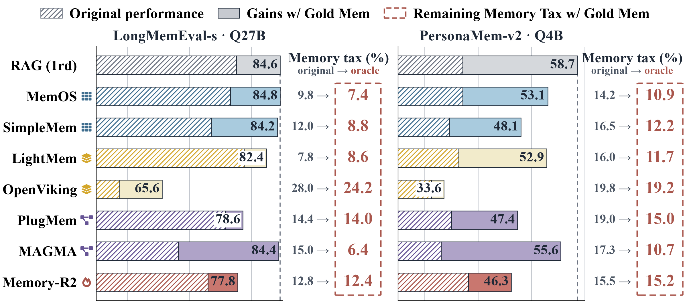
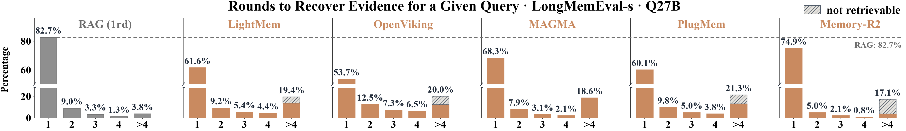
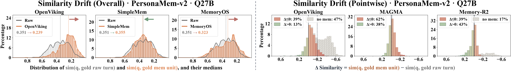
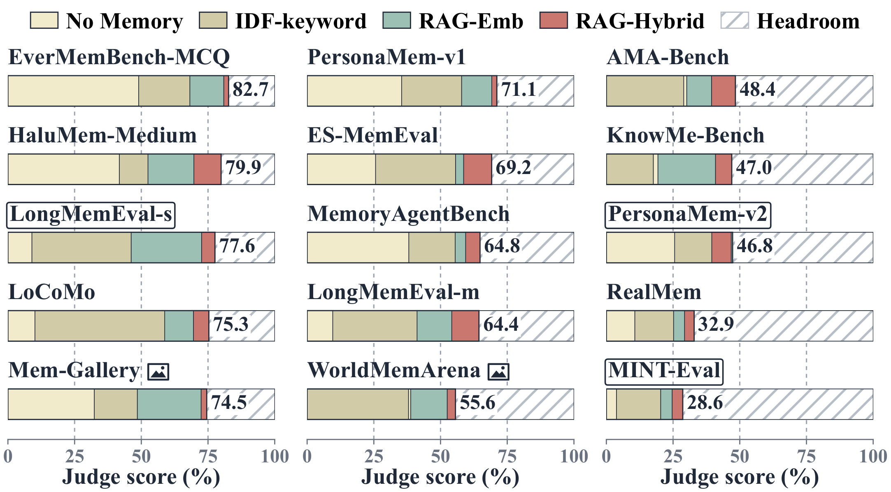
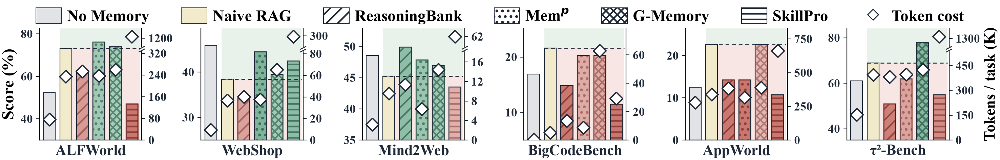

Memory Tax
Dissecting the Net Value of Agent Memory
1University of Illinois Urbana-Champaign 2Tsinghua University
3Renmin University of China 4Verdent.ai 5University of Waterloo
Agent memory has been booming in the last two years.
Yet a simple but fundamental question seems to be overlooked:
How much does memory actually gain over a very straightforward baseline, such as naive RAG?
Across 11 representative memory systems, 3 benchmarks and 3 backbones, we find many dedicated memory systems underperform a naive RAG. To better understand this, we propose memory tax in this paper. See our studies below.
01Leaderboard
Performance (%) of 11 memory systems on LongMemEval-s, PersonaMem-v2 and MINT-Eval.
Each run on
Qwen3.5-4B, Qwen3.6-27B and GPT-5.6 Luna (low).
Memory systems usually pay far more cost than RAG, but often without a matching gain in accuracy.
Token cost
LLM calls
Bold = best, underline = second best per column. Cells are shaded by how far they fall below or rise above RAG (2rd).
02Memory Benefit vs. Memory Tax
We match each memory system against naive RAG (1 round) on the same questions. Some questions only the memory system gets right. That is the memory benefit. Other questions it fails but RAG gets right. That is the memory tax. What is left after the tax is the net value of building memory.
Sorted by net value. "Tokens" is the LLM token bill relative to RAG (1rd). Click a row to print its receipt.
The same design choice wins one question and loses the next
- Any nontrivial memory process introduces deviations from the raw history, such as extracting atomic facts, linking sessions, anchoring time or rewriting content.
- These deviations are intended to better serve future queries, yet some may also have unintended harmful effects due to particular design choices.
- We identify some representative mechanisms of agent memory below, and the same mechanism can bring memory benefit on one question (left) and memory tax on another (right).
03Inside the Memory Tax
Memory benefit largely reflects the intended value of a memory design.
So we focus on the overlooked side — memory tax, and trace it along three dimensions, while also considering some evaluation-side factors.
1 · Faithfulness - How well is the information preserved?
Memory operations such as compression and rewriting may drop or distort evidence before retrieval begins, and such loss cannot be recovered later. To measure it, we first locate the raw turns that hold the evidence (gold raw turns) and the memory units built from them (gold memory units). We then answer each question with only its gold memory units. This takes retrieval out of the picture, so any remaining tax comes from information lost during construction.

Case studies: what each system kept from one sentence
2 · Accessibility - How easily can stored information be accessed?
Even when evidence survives construction, it still has to be found at query time. We replay retrieval round after round over each memory store and record when all gold memory units have come back. Compared with raw chunks, memory systems recover fewer questions in the first round, so the evidence is buried deeper. Case studies point to three patterns: evidence is fragmented across units, diluted by unrelated content, or rephrased so it no longer matches the query.


Case studies: in which retrieval round the evidence comes back
RAG (1rd)
3 · Robustness - How robust is memory across backbones?
A long-lived agent may build its memory with one model and later read it with another. To test this, we build memory with each of the three backbones and then swap the model that answers. Two patterns emerge. First, with the answering model fixed, changing the construction model already shifts the score. This is expected, since memory operations rely on the backbone and can produce different memory items from the same history. More interestingly, with the memory store fixed, changing the answering model causes a larger drop than it does for RAG in many systems. So memory tax also shows up as reduced robustness to backbone changes.
Each row fixes the construction model. The weaker QA model's marker slides from the stronger QA model's score to its own, drawing the accuracy drop: red if it drops more than RAG (grey bar), green otherwise.
Benchmark Headroom - The evaluation side makes the tax more visible.
Across more long-term memory benchmarks, simple retrieval already scores high: an IDF-keyword matcher passes 50% on some, and RAG-Hybrid reaches about 70%. Such results suggest some current evaluation settings are relatively retrieval-friendly, leaving quite limited headroom for heavy memory to improve over naive retrieval.
How the four simple baselines work
The four baselines are No Memory, IDF-keyword, RAG-Emb and RAG-Hybrid. IDF-keyword takes the two rarest words of the query (highest IDF in the corpus) and fills the top-k budget with chunks containing both, then either one, with no embedding, reranker or LLM involved.
When such a crude matcher already scores above 50%, many questions can be answered by matching one or two distinctive words, which leaves little headroom for memory processing.

On the other hand, many real-world queries are also naturally retrieval-friendly, making such accurate recall tasks essential and meaningful in its own right. Current benchmarks contain a large share of such queries, and future evaluations could complement them with harder settings. Moreover, reporting memory systems alongside naive RAG can make remaining improvement room more explicit, which also helps clarify the contribution of built memory. RAG scores can also serve as a reference for calibrating difficulty and leaving meaningful room for more reliable evaluations.
04Generalizing Memory Tax
The benefit-tax view is not tied to conversational memory: any nontrivial memory operation can deviate from the source and have the double-edged effects.
1 · Experiential memory
Agents accumulate experience on training tasks and reuse it on test tasks (Qwen3.5-4B), across embodied (ALFWorld), web (WebShop, Mind2Web), coding (BigCodeBench) and tool use (AppWorld, τ²-Bench). Distilled workflows beat naive trajectory RAG on web tasks, while several memory methods fall behind it on tool use.

2 · World-model memory
For long-horizon scene consistency, directly retrieving and reinjecting past frames stays strong, while latent- or cache-based memories do not consistently beat it.
| Method | Mem. form | C-as-M-eval | MemoBench | ||
|---|---|---|---|---|---|
| SSIM ↑ | 1−LPIPS ↑ | SSIM ↑ | 1−LPIPS ↑ | ||
| I3DM | naive frames | .560 | .704 | .430 | .476 |
| WorldKV | raw KV | .372 | .459 | .379 | .420 |
| ReWorld | learned KV | .378 | .510 | .387 | .422 |
| MagicWorld | visual latents | .388 | .341 | .433 | .412 |
| FramePack | visual latents | .217 | .312 | .279 | .303 |
| HyDRA | mem. tokens | .320 | .319 | .355 | .326 |
Example frame sequences for testing long-horizon scene consistency.
05Design Implications
We also provide some simple changes that reduce or compensate for memory tax on existing systems, without a new architecture and without test-time scaling such as deeper retrieval or stronger backbones.
Make Deviations Recoverable
Memory operations inevitably deviate from the raw history, and no single design fits every future need. Since harmful deviations are hard to remove entirely, a more practical goal is to make them recoverable through a lightweight path back to the source. As a proof of concept, we retrieve from the raw history alongside memory and rerank both jointly (src-aug).
| Method | LongMemEval-s | PersonaMem-v2 | ||
|---|---|---|---|---|
| Acc ↑ | Tax ↓ | Acc ↑ | Tax ↓ | |
| SimpleMem | 73.6 | 12.0 | 46.7 | 11.2 |
| + src-aug | 82.8 | 5.2 | 49.6 | 7.2 |
| + recursive | N/A | N/A | 46.8 | 12.1 |
| MemoryOS | 73.4 | 11.4 | 48.2 | 17.1 |
| + src-aug | 76.4 | 7.8 | 53.0 | 8.5 |
| + recursive | N/A | N/A | 49.1 | 16.4 |
| Mem-T | 75.0 | 10.8 | 42.1 | 15.2 |
| + src-aug | 80.0 | 5.2 | 49.0 | 8.7 |
| + recursive | N/A | N/A | 45.7 | 13.6 |
Accuracy and memory tax (%) with Qwen3.6-27B. LongMemEval-s has one query per corpus, so inter-query mechanisms do not apply.
Recursive or Self-Referential Memory
Memory tax shows up in actual use, when evidence becomes harder to access or is found only after a deep search.
That retrieval experience can feed back into memory construction and improve access for similar future information needs.
Inspired by recent progress in RSI, where an agent is expected to "improve how it improves", memory can similarly "remember how it remembers".
As a proof of concept, we treat past queries and their retrieved evidence as source materials of memory and feed them into the process, so similar needs later reach it directly.
Modeling Future Demand
Many systems build memory ahead of time (AoT), before any query arrives. Without knowing future demand, it is unclear which deviations will help.
To cover a broader range of possible queries, AoT systems may need to process more information in more elaborate ways, making it increasingly expensive. Just-in-time (JiT) memory waits for the query and can choose
more targeted deviations, but moves the cost online and adds user-facing latency.
A middle ground is to model the future demand. Personal-agent queries are not purely random. Past interests, habits and access patterns give a prior over
what information is likely to matter, so construction can spend effort more selectively. From this view, memory can partly be seen as an
implicit recommendation system that estimates the future relevance of past information.
BibTeX
@misc{he2026memorytaxdissectingnet,
title={Memory Tax: Dissecting the Net Value of Agent Memory},
author={Xuan He and Sining Zhoubian and Ruozhen Yang and Yuhao Wen and Zhineng Wang and Yuyang Hu and Ke Yang and Yuyu Zhang and Ping Nie and Jiawei Han and ChengXiang Zhai},
year={2026},
eprint={2610.34073},
archivePrefix={arXiv},
primaryClass={cs.CL},
url={https://arxiv.org/abs/2610.34073},
}